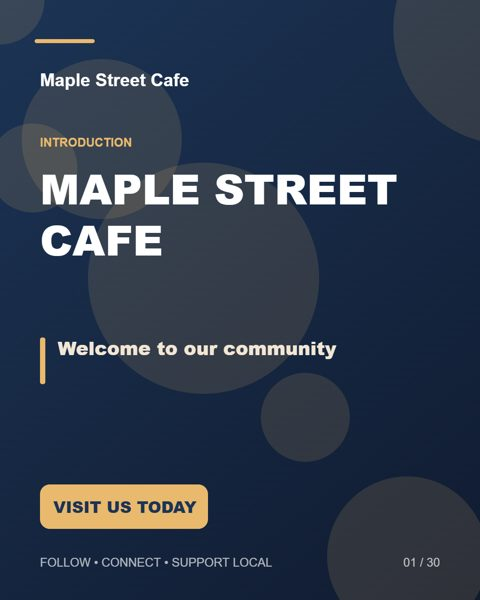
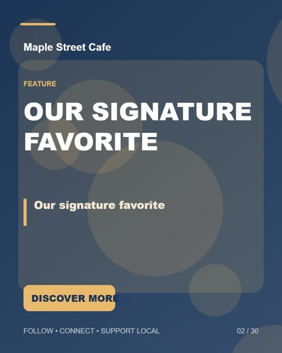
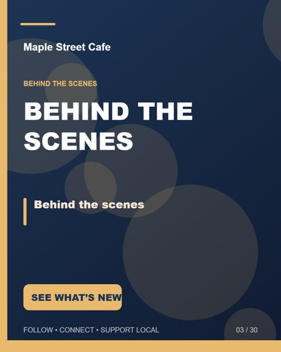
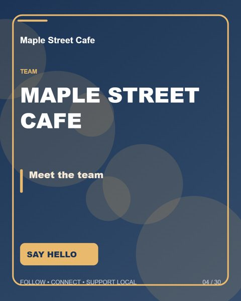
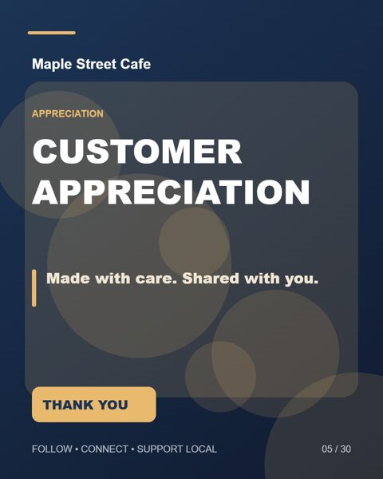
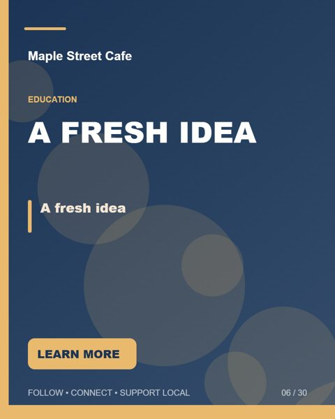

Create 30 branded social media graphics with editable captions and hashtags. Export your campaign and get back to running your business.
Get the toolkit — $99See sample postsOne-time purchase concept · No subscription required for the offline template-based editor
Examples from a 30-day Maple Street Cafe campaign. Your results are editable and should be reviewed before publishing.






Export 1080 × 1350 PNG designs with your business branding.
Get editable campaign copy in a CSV file for scheduling.
Mix up promotional, educational, and engagement posts while maintaining a consistent look.
One-time price for the downloadable, template-based studio.
Request purchase detailsSeller setup required: Replace the email link with your real payment checkout URL before publishing. This demo does not accept payments or collect customer information.
The current downloadable editor uses predefined templates and editable copy; it does not call a live AI model.
Yes. Edit business details, colors, headlines, offers, and captions in the studio.
No. Export the graphics and captions, then publish or schedule them with your preferred platform.